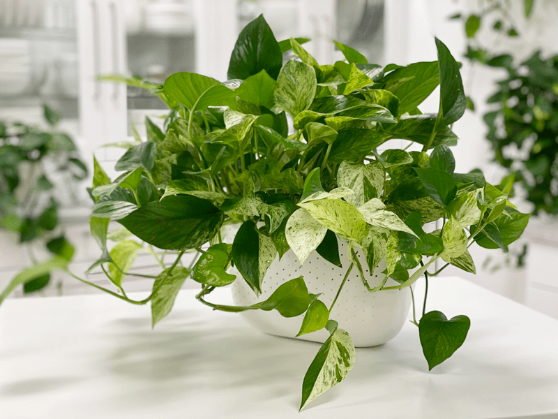
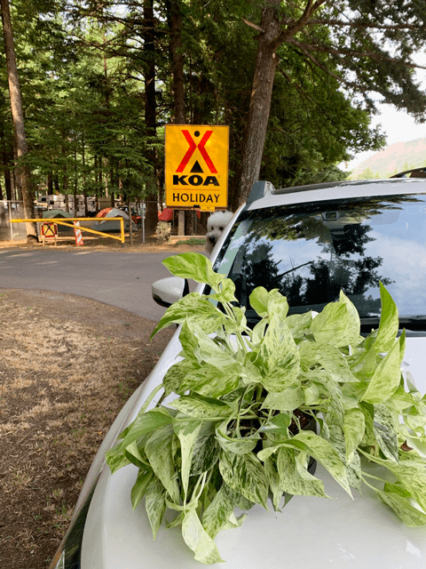
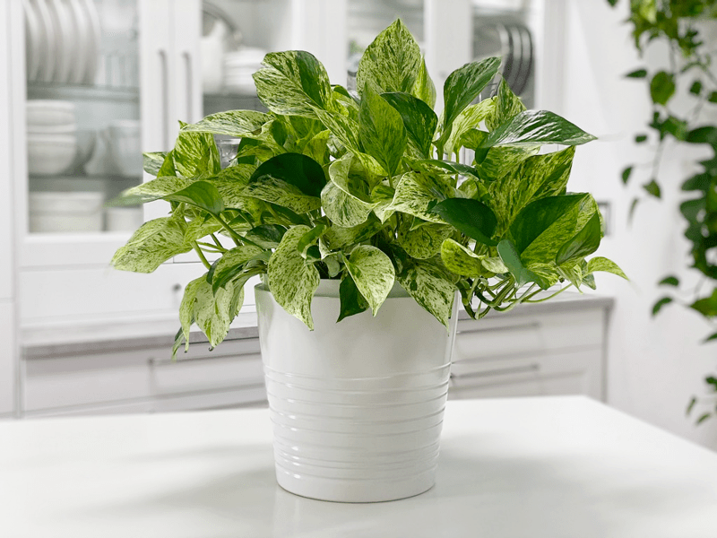
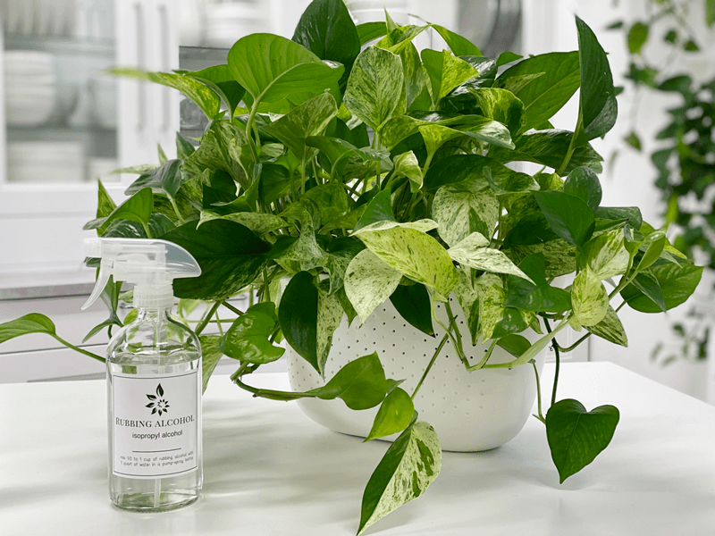

Pothos | Marble Queen Pothos | Care Difficulty – Moderate
Marble Queen (Epipremnum aureum ‘Marble Queen’) is another common pothos variety. It features heart-shaped green leaves heavily splashed and streaked with creamy white. The foliage is usually similar in size to golden pothos but a bit more challenging to grow, which I discuss below. Marble Queen is the most popular cultivar and very slow-growing. It is highly variegated, with foliage that tends to be more white than green.

I really enjoy the leaf patterns of the Marble Queen pothos. At first, I struggled…well, not sure if that’s the right word, but I found pothos plants with a LOT of variegation on the leaves to be a tad bit more temperamental. The more white they have on the leaves, the more indirect sunlight the plant requires. If your plant doesn’t get enough light, it will start to revert to being all green.

I bought my first one from a gal on a Facebook virtual garage sale. She lived over an hour away but was going camping for Memorial weekend (2019) in a nearby town, which cut our distance in half.
I agreed to meet her at the campground. So, I loaded Milo (the pup) into the car and motored down the highway. I failed to find out what she was driving, what she looked like, or what camping spot they were parked in. When we got the campground, I parked the car at the entrance and stood outside the car.
Soon, I spotted a tiny woman carrying a large, lush pothos plant. No more guessing. I was beyond thrilled with the plant. I handed her twenty dollars, hopped in the car, and pointed it toward home.
The first two days were wonderful; the plant looked so healthy. Then…it started to droop heavily. I had it (I thought at the time) in a great location that received plenty of indirect light, the soil appeared healthy, it was watered perfectly, I didn’t see any bugs… I was stumped.
Several weeks passed; each day was an up and down day. I couldn’t figure out why it wasn’t happy in its new home. I reached out to the original owner, and she suggested that I transplant it into a larger pot. So I did. It was pretty root bound, but not alarmingly so. It still fought with depression. That is what I now referred to it as because I couldn’t figure out any other reason for its droopiness. It was flat- out depressed and missed its previous home.
After about a month, I decided to relocate it. I had tried everything else. I surrounded it with some other pothos plants and said a little prayer. Within days, the leaves started to perk up; within a week, it was vibrant and healthy! It continues to reside in a little jungle of plants that are near a north-facing window. You can see that the plant did lose some of the white variegation, but that’s okay; I still LOVE the plant.

Here it is, about six months later. It didn’t take nearly that long to “come back to life” … just wanted to show you an update. It may appear a bit smaller, and that’s because it is. During the battle of “depression,” I had to prune the plant. Plus, as you can see, the leaves and stems are nice and perky… strong! They are not all soft and floppy as they were when I got the plant.
Water Requirements
Marble Queen pothos like their soil to be kept on the drier side. I water mine every 1-2 weeks, allowing the soil to dry out between waterings. I then take the plant to the kitchen sink and drench the soil until it starts dripping from the drain holes. Note * If your plant is in a hight light spot, it will require more water than space with less light. Overwatering can lead to brown/block splotches on the edges of the leaves. It took me a bit to learn this. (see photos down below)
Light Requirements
According to the books, this plant is considered a low-light plant. However, low light does not mean NO light. Make sure the location you’re putting this plant in has either a window or receives at least 8 hours a day of bright fluorescent light. In bright light, pothos appreciates a watering when the soil has dried halfway through the pot.
In low- and medium-light spaces, it is best to allow the soil to dry almost all the way through the pot, but do not let the plant sit dry for extended periods. A good indication of your plant needing water is when the foliage begins to soften/wilt. It is best to water just as it begins to wilt (not after it has fully collapsed), and always be sure to feel the soil in addition to visually monitoring the plant.
Additional Care
- Remove any dead, discolored, damaged, or diseased leaves and stems as they occur with clean, sharp scissors. Snip stems just above a leaf node; new growth will emerge from this cut. I do this every time I water my pothos. I use the watering time to inspect my plants thoroughly.
- Clean the leaves often enough to keep dust off of them. You can wipe the plant down regularly with rubbing alcohol to deter insects from the plant.
- About every six months, I like to give the plant some preventative treatments against the wildlife of plants (AKA – bugs). I spray them down with a diluted rubbing alcohol solution, then wipe it off of each leaf with a clean cloth. After that, I spray it down with a neem oil solution. I will share all of this in another detailed post.


Optimum Temperature
They prefer average to warm temperatures of 65-85 degrees. Do not expose it to temperatures below 65 degrees even for a short time, because cold air will damage the foliage. Avoid cold drafts and heat vents.
Fertilizer – Plant Food
The Marble Queen is an easy indoor plant, and you don’t need to worry about fertilizing a lot. Feed it every 3-6 months with general-purpose indoor plant fertilizer. If you overfeed your plants, they will let you know. Here are a few things to watch for:
- Yellowing or browning leaves.
- The top surface of the soil may be white or crusty.
- The leaves of the plant will start dropping off.
- The roots can begin to rot.
If you overfeed a plant, you can remove from its current soil and repot it in fresh soil; this is undoubtedly the best way to get rid of the excess nutrients affecting your plant. Alternatively, you can flush the soil, which involves drenching the soil with water and letting it drain out. Repeat this several times to help the soil get rid of excess fertilizer.
Plant Characteristics to Watch for
Brown Tips
- Brown leaf tips may indicate the air is too dry.
- Solution: Add a room humidifier.
Dark Spots with Yellow Halos
- Bacterial Leaf Spot Disease causes dark spots with yellow halos.
- Solution: Keeping the leaves dry helps prevent bacterial diseases.
Browning Leaves
- This may be a sign that the plant is too cold.
- Solution: Relocate the plant to a warmer location; keep it away from air-conditioning vents or windows.
Yellowing Leaves
- The yellowing of the leaves could be due to underwatering.
- Solution: Water the plant more often.
Yellowing Leaves with Brown or Black Spots
- If you see yellowing leaves or black dots on the leaves, it can indicate over-watering.
- Solution: Allow the plant dry out before the next watering, then saturate the soil. See the watering requirements above.
My Plant Is Sparse-Looking
- If the base of the plant is thinning out and has long vines, it’s time to trim them, IF you want a lush plant base.
- Solution: Aggressively trim the long vines every few months to keep your plant full and bushy. You can use the stem tip clippings to start new plants easily.
Common Bugs to Watch For
If you want to have healthy houseplants, you MUST inspect them regularly. Every time I water a plant, I give it a quick look-over. Bugs/insects feeding on your plants reduces the plant sap and redirects nutrients from leaves. Some chew on the leaves, leaving holes in the leaves. Also watch for wilting or yellowing, distorted, or speckled leaves. They can quickly get out of hand and spread to your other plants.
IF you see ONE bug, trust me, there are more. So, take action right away. Some are brave enough to show their “faces” by hanging out on stems in plain sight. Others tend to hide out in the darnedest of places, like the crotch of a plant or in a leaf that has yet to unfurl.

- Mealybugs look like small balls of cotton. They can travel, slooooooowly, but they have a strong will and determination! Though they are slow-moving, if any plant is touching another, there is a chance the mealybug will hitch a ride on a new leaf and spread. They breed like rabbits of the insect world. Females can deposit around 600 eggs in loose cottony masses, often on the underside of leaves or along stems.
- Scales are dark-colored bumps that are primarily immobile insects that stick themselves to stems and leaves. They are rather inconspicuous and don’t look like a typical insect. They can range in color but are most often brownish in appearance. They’re called “scales” primarily due to their scale-like appearance on a plant, due to waxy or armored coverings. They are often seen in clumps along a stem, sucking away at the plant’s juices with their spiky mouthpart.
- Aphids are more commonly seen if you place your plants outdoors. Aphids are indeed bugs. They are tiny insects that, along with black, also come in shades of yellow, green, brown, and pink. They are often found on the undersides of leaves.
- Spider mites are more common on houseplants. They are not insects – they are related to spiders. These appear to be tiny black or red moving dots. Spider mites are nearly invisible to the naked eye. You often need a magnifying lens to spot them, or you may just notice a reddish film across the bottom of the leaves, some webbing, or even some leaf damage, which usually results in reddish-brown spots on the leaf.
Toxicity
Marble Queen pothos is poisonous, with a #2 toxicity level. Pets that eat stems or leaves of the plant may exhibit vomiting, pawing at the mouth, lack of appetite, and drooling.
© AmieSue.com